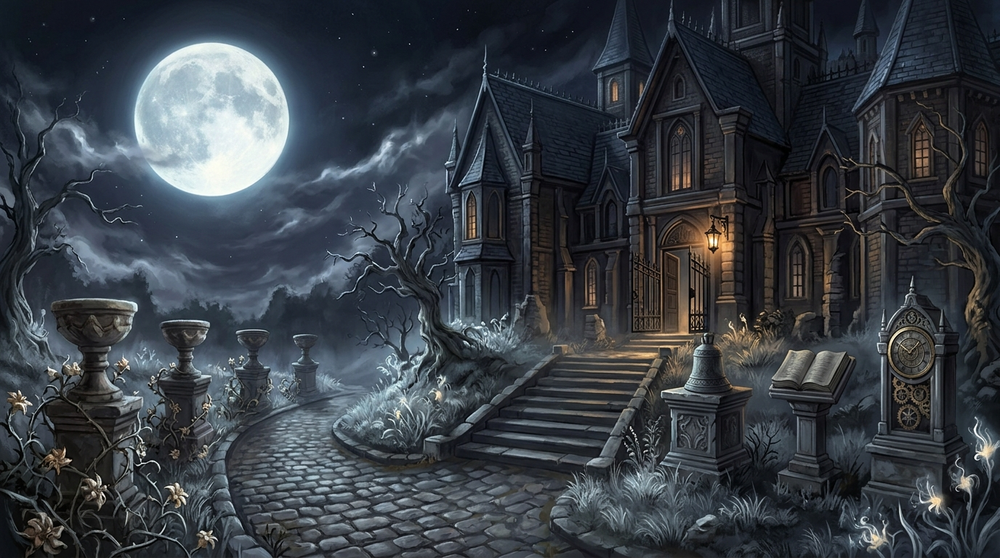
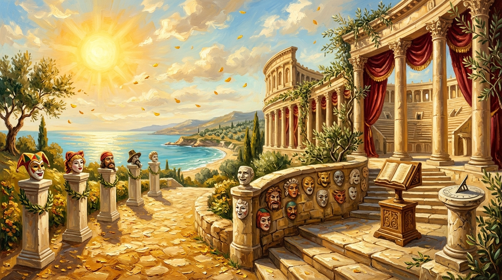

苍白血月 · Paleblood Moon
点击切换至 Enotria 日光剧院
圣杯 I · 主控台
Alessandro · 活跃中
共鸣 · Resonance
Agent Hub · 召灵之钟
学院 · Byrgenwerth
Project Hub · 古籍与眼睛
星辰钟楼 · Clocktower
River · 时间与记忆长河
当前视角：永夜猎人工坊 (Dark) · 点击左上角月亮或右上角按钮可原位切换至 Enotria 日光剧院